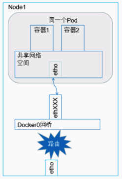
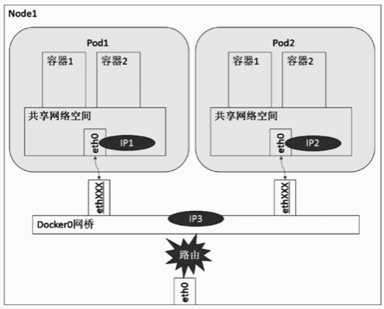
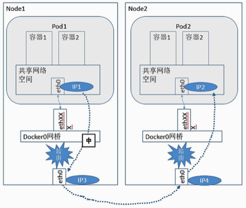

Kubernetes & Docker 网络原理（二）
Kubernetes Pod 间通信
之前的文章中主要关于 Docker 的网络实现进行了介绍和探讨，对于 Docker 网络而言，其最大的局限性在于跨主机的容器通信方案上存在空白，而 Kubernetes 作为适合大规模分布式集群的容器编排平台，其在网络实现层面上主要解决的问题就包括了如下几点：
- 容器间通信；
- Pod 间通信；
- Pod 与 Service 通信；
- 集群内外通信；
这篇博文主要针对 Kubernetes 的容器间通信和 Pod 间通信进行介绍和探讨，之后再通过单独一篇文章去探讨 Pod 与 Service 的通信，也就是 kube-proxy 工作原理和 Service 机制相关。
容器间通信
学习 Kubernetes 的容器间通信方案之前要理解 Kubernetes 中的 Pod 概念，Pod 是 Kubernetes 中最基本的调度单位，而不是 Docker 容器，Pod 的本意是豆荚，可以将容器理解为豆荚中的豆子，一个 Pod 可以包含多个有关联关系的容器，之后讨论的 Pod 与 Service 的通信也是从 Pod 层面而言的。这是必须要提前认识的概念，但是在底层，还是涉及到容器之间的通信，毕竟 Pod 只是一个抽象概念。
同一个 Pod 内的容器不会跨主机通信，它们共享同一个 Network Namesapce 空间，共享同一个 Linux 协议栈。所以对于网络的各类操作，因此可以把一个 Pod 视作一个独立的「主机」，内部的容器可以用 localhost 地址访问彼此的端口。这么做的结果是简单、安全和高效，也能减小将已经存在的程序从物理机或者虚拟机移植到容器下运行的难度。
如图，Node 上运行着一个 Pod 实例，Pod 内部的容器共享同一个 Network Namespace，因此容器1和容器2之间的通信非常简单，就可以通过直接的本地 IPC 方式通信，对于网络应用，可以直接通过 localhost 访问指定端口通信。因此对于一些传统程序想要移植到 Pod 中，几乎不需要做太多的修改。

Pod 间通信
刚才说同一个 Pod 内的容器都在同一个 Node 上，因此不会出现跨节点通信的问题，但是在 Pod 层面，作为 Kubernetes 的基本调度单位，不同的 Pod 是很有可能被调度到不同的 Node 上的，当然也有可能被调度到同一个 Node 上，因此对于 Pod 间的通信，应该分为两种来探讨：
- 相同 Node 下 Pod 间通信
- 不同 Node 下 Pod 间通信
相同 Node 下 Pod 间通信
每一个 Pod 都有一个真实的全局IP地址，同一个 Node 内的不同 Pod 之间可以直接采用对方Pod的IP地址通信，而且不需要采用其他发现机制，例如 DNS、Consul 或者 Etcd。

同一个 Node 下，不同的 Pod 都通过 Veth 设备对连接至 docker0 网桥，Docker bridge 模式在之前的 Docker 网络实现里已经讲过了，Pod 的 IP 都是从 docker0 网桥上动态分配的，图上的 Pod1、Pod2、docker0 网桥它们三者属于同一个网段，即它们之间是可以直接通信的，这个很好理解。
对于每个 Pod 的 eth0 这一点，难道大家没有疑问吗？为什么 Pod 是一个抽象的虚拟的概念，自己还能有一个独立的网络协议栈，即 Network Namespace，还能挂载一个 Veth 设备？实际上这里的图上没有划出来，每个 Pod 默认会有一个 pause 容器 (实际名称：google_containers/pause)，可以认为是 Pod 的一个「管家容器」，pause 容器负责了包括 Pod 网络相关的一些初始化工作，pause 容器使用的就是之前讲到的 Docker 的默认网络通信模型 Bridge，pause 通过 Veth 设备对与 docker0 桥接，而 Pod 内的其它容器采用了非默认的网络配置和映射容器的模型，指定映射目标容器到 Pause 容器上，这么做的目的很简单，为实现一个 Pod 内多个容器，本身没有很好的方式进行连接，pause 提供一个 Pod 内部的通信「桥梁」，为什么不是后一个容器关联前一个容器的方式呢？这种方式的话一旦前一个容器启动不起来或者挂掉，后面的容器都会跟着受影响。
不同 Node 下 Pod 间通信
在同一个 Node 下的 Pod 间通信因为可以直接通过 docker0 桥接实现，因此很容易理解，但是在不同 Node 下的 Pod 间通信如何实现就是个很有学问的事情了。
首先我们要知道的是，每个宿主机上 docker0 网桥为 Pod 分配的都是私有 IP，而 Kubernetes 要求网络对 Pod 的地址是平面且直达的，说白了就是在集群中可以通过 Pod 的私有 IP 在各个不同 Node 之间通信。因此我们可以知道，对于 Pod IP 的规划是非常重要的，要实现上面讲的可以在集群内部使用私有 IP 进行不同 Node 间的 Pod 通信，最起码要保证在集群层面这些私有 IP 一定是不冲突的才行，注意，这些 Pod 私有 IP 是保存在 Etcd 集群中的。
另外，我们知道，不同 Node 之间的通信一定是要经由宿主机的物理网卡，因此要实现 Pod 在不同 Node 之间的通信，还要通过 Node 的 IP 进行寻址和通信，这也是需要关注的一点。
综上我们可知，对于不同 Node 下的 Pod 间通信，核心是满足两点：
- Pod IP 实现集群层级的不冲突。Pod 的 IP 分配虽然是有本地 docker0 负责，但是具体的地址规划一定是要在集群层面，保证其不冲突，这是通过私有 Pod IP 跨 Node 通信的基本条件；
- Pod IP 借助 Node IP 进行寻址访问。Node 之间通信的桥梁还是 Node 实实在在的物理网卡，因此需要找到一种方法，将 Pod IP 与 Node IP 关联起来，通过这个关联实现不同 Node 的 Pod 之间的访问。
对于第一点，实现 Pod IP 在集群层级的不冲突，我们需要对 docker0 的地址段进行规划，保证每个 Node 上的 docker0 网段都是没有冲突的，针对这一点，可以手工配置，当然如果是小集群还好，如果是大规模集群的话，我认为这是在扯淡，因此，应该有不这么反运维工程师的方案，比如做一个分配规则，让程序自己去分配地址段，这是很容易想到的，没错，多亏了 Kubernetes 的 CNI（容器网络接口），有一些优秀的 Kubernetes 网络增强软件就可以对接进来帮我们完成这些工作，典型的比如 Flannel、Calico。
对于第二点，其核心目标就是实现 Pod IP 经由 Node IP 的寻址，也就是说需要有一个机制知道 Pod IP 具体在哪一个 Node 上，通过宿主机将数据转发到目标 Node 上，然后再由目标 Node 将数据转发到具体的本地 docker0 上，最后转发到目标 Pod 中，整个过程大致如图所示：

一些知名的云平台本身就设计实现 Pod 的 IP 管理，因此 Pod 的通信可以借助平台层的网络设计打通，但是在大部分情况下，尤其是一般企业自己维护的 Kubernetes 集群上，可能无法享受到这种机制，因此还需要自己进行相关的网络配置，让网络满足 Kuberntes 的要求之后才能实现 Pod 之前的正常通信，进而实现集群的正常运转，就像上面第一点中说的那样，好在 Kubernetes 的高可扩展性，通过 CNI 机制，一些网络增强组件（Flannel、Calico 等）实现了上面这些网络要求。但是基本的原理，基本的需求是上面描述的，这个是必须要理解的，但是对于其实际实现，每个增强组件都有自己的实现方案，这里没法一个一个去详细介绍，心有余而力不足，真有时间的话会好好研究并且撰写相关的博文与大家分享。